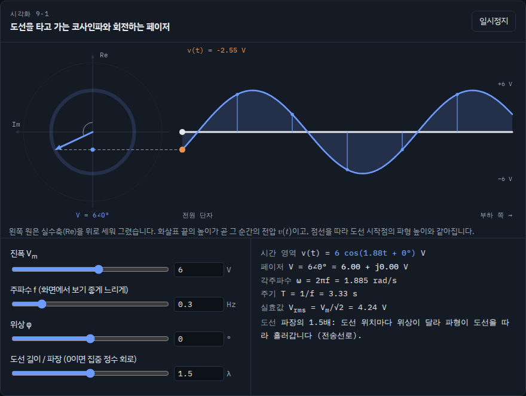
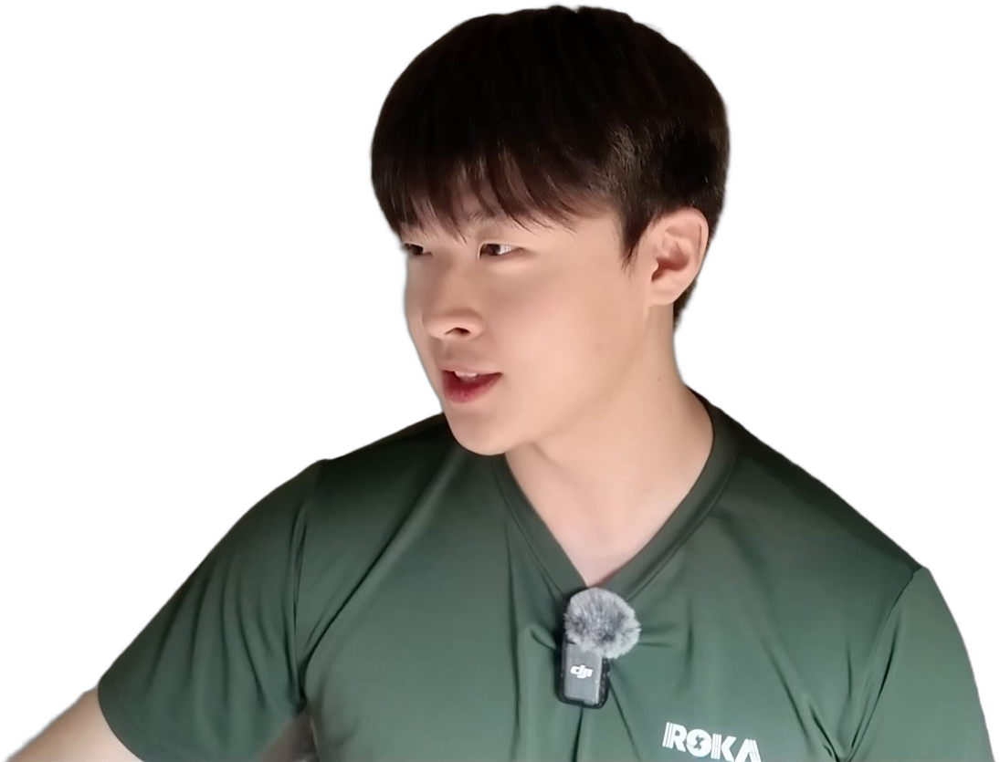

<!doctype html>
<meta charset="utf-8">
<title>보이는 회로이론 썸네일</title>
<!-- 다크 모드 썸네일 2장 (1280×720). 사이트 팔레트: 배경 #0d1218 · 전압 파랑 #6e9bff · 전류 주황 #f0934b. node render.js 로 찍는다. -->
<style>
:root{--bg:#0d1218;--volt:#6e9bff;--amp:#f0934b;--yel:#ffd43b;--ink:#fff;font-family:'Noto Sans CJK KR',sans-serif}
*{box-sizing:border-box;margin:0}
body{background:#000}
.thumb{width:1280px;height:720px;position:relative;overflow:hidden;margin-bottom:10px;background:radial-gradient(900px 600px at 25% 30%,#16233a,var(--bg) 70%)}
canvas{position:absolute;inset:0}
.t{position:absolute;font-weight:900;line-height:1;letter-spacing:-.04em;color:#fff;-webkit-text-stroke:14px #05080c;paint-order:stroke fill;filter:drop-shadow(0 10px 18px rgba(0,0,0,.6))}
.person{position:absolute;filter:drop-shadow(6px 0 0 #fff) drop-shadow(-6px 0 0 #fff) drop-shadow(0 6px 0 #fff) drop-shadow(0 -6px 0 #fff) drop-shadow(0 0 40px rgba(110,155,255,.55))}
.site{position:absolute;border-radius:18px;border:4px solid var(--volt);box-shadow:0 0 40px rgba(110,155,255,.6),0 24px 40px rgba(0,0,0,.6);overflow:hidden;background:#0d1218}
.site img{display:block;width:100%}
.tag{position:absolute;font-weight:900;color:#111;background:var(--yel);border:5px solid #05080c;border-radius:14px;padding:6px 20px;box-shadow:0 7px 0 #05080c}
</style>

<section class="thumb" id="A">
  <canvas id="cA" width="1280" height="720"></canvas>
  <div class="site" style="left:40px;top:330px;width:560px;transform:rotate(-4deg)"></div>
  
  <div class="t" style="left:34px;top:30px;font-size:96px;color:var(--volt)">전기전자공학과</div>
  <div class="t" style="left:34px;top:140px;font-size:170px;color:var(--amp)">주목!</div>
  <div class="tag" style="left:420px;top:190px;font-size:40px;transform:rotate(-5deg)">회로이론, 눈으로 보세요</div>
</section>

<section class="thumb" id="B">
  <canvas id="cB" width="1280" height="720"></canvas>
  <div class="site" style="left:40px;top:300px;width:600px;transform:rotate(3deg)"></div>
  
  <div class="t" style="left:34px;top:30px;font-size:120px">회로이론</div>
  <div class="t" style="left:34px;top:160px;font-size:88px"><span style="color:#8a94a6">수식 말고</span> <span style="color:var(--volt)">눈으로</span></div>
  <div class="tag" style="left:640px;top:58px;font-size:38px;transform:rotate(6deg)">직접 만든 무료 사이트</div>
</section>

<script>
// 배경: 회로 기판 느낌의 격자 + 빛나는 전압(파랑) 코사인파와 전류(주황) 점선
for (const id of ['cA','cB']) {
  const c = document.getElementById(id).getContext('2d');
  c.strokeStyle = 'rgba(110,155,255,.08)'; c.lineWidth = 2;
  for (let x = 0; x < 1280; x += 48) { c.beginPath(); c.moveTo(x, 0); c.lineTo(x, 720); c.stroke(); }
  for (let y = 0; y < 720; y += 48) { c.beginPath(); c.moveTo(0, y); c.lineTo(1280, y); c.stroke(); }
  const wave = (amp, y0, ph, color, w, blur) => { c.save(); c.shadowColor = color; c.shadowBlur = blur; c.strokeStyle = color; c.lineWidth = w; c.beginPath();
    for (let x = 0; x <= 1280; x += 4) { const y = y0 - amp * Math.cos(x / 1280 * Math.PI * 4 + ph); x ? c.lineTo(x, y) : c.moveTo(x, y); } c.stroke(); c.restore(); };
  wave(110, 300, 0, 'rgba(110,155,255,.55)', 10, 40);
  c.setLineDash([2, 22]); c.lineCap = 'round'; wave(110, 300, 0, 'rgba(240,147,75,.95)', 9, 10);
}
</script>
